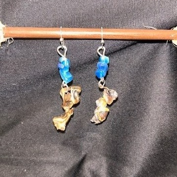

Hi, I'm Susy.
Firearms instructor, range safety officer and artist.

Where it started
I spend a lot of my time at the shooting range. I teach people to shoot, and I work the line as a range safety officer. When you do that, you notice what's left behind when the shooting stops: spent brass everywhere.
Most people see scrap. The artist in me kept seeing something else. Bullet jackets come back from the range twisted, split and curled into shapes nobody could design on purpose. I started picking them up, and Bloomin' Brass grew from there.
Two sides of me
On the range, my job is precision, patience and safety. I help people build confidence and respect for what they're holding, and I keep a close eye on everyone around me. In my studio, I get to slow down, follow my instincts and let the material lead.
Those two worlds don't seem to have much in common, but they meet in every pair of earrings I make. Something forged in a loud, serious place becomes something soft and beautiful that you'd wear to dinner.
Made by hand, one pair at a time
I clean every piece of brass before I work with it, then shape it by hand. Some pieces I leave curled the way the range left them. Others I flatten into petals and ribbons. Then I pick out glass, stone or shell beads that suit each piece's shape and color.
Because the metal is never the same twice, neither are my earrings. The pair you see is the pair you get.
Why reclaimed?
Brass is a tough, beautiful metal with a warm glow that deepens over time. I love giving it a second life. It keeps it out of the scrap bin and turns it into something you'll want to keep.
Thanks for being here. I hope you find a pair you love.
— Susy